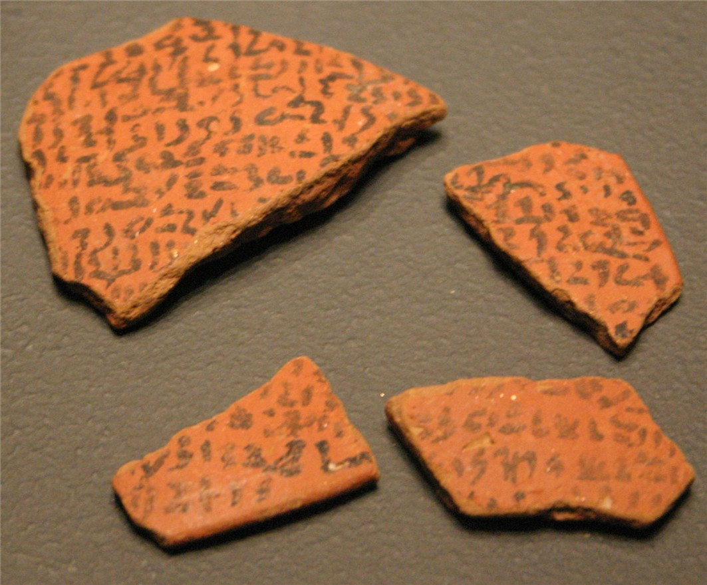

Egyptian Execration Texts

- Find Name
- Egyptian Execration Texts
- Description
- The Egyptian execration texts are ritual curse texts inscribed on pottery sherds and figurines of bound prisoners, which were then smashed and buried to magically neutralize Egypt's enemies. The earliest examples come from the Old Kingdom, but the famous groups are the Berlin texts (pottery sherds naming about 20 Canaanite and Phoenician places and over 30 rulers, published by Kurt Sethe in 1926) and the Brussels texts (figurines from Saqqara naming 64 places, published by Georges Posener in 1957), with a further Mirgissa group published by Yvan Koenig in 1990. The Berlin texts date to the end of the 11th into the 12th Dynasty, early in the second millennium BC.
- Historical Period
- Middle Kingdom, c. 20th-18th centuries BC
- Evidence Class
- Contextual
- Interpretations
- The execration texts are a gold mine for the geography of Canaan around 1900-1800 BC: they name Shechem, Ashkelon, Hazor, and other Canaanite towns, and the Berlin texts contain possibly the first known mention of Jerusalem (read as Rushalimum) - but that reading is debated, so Jerusalem's attestation here must be called 'possible,' not certain. The texts also warn against over-reading: they list enemies real and conventional, and their purpose was magic, not history-writing, so each name must be weighed rather than taken as a census of Canaan.
- Alternative Names
- Berlin Texts; Brussels Texts; Mirgissa Texts
- Related Places
- Related Books
- Scripture Illuminated
- Biblical Significance
- The execration texts independently confirm that the Canaanite towns of the Bible were real, named places in Egypt's world a thousand years before Israel's monarchy - and may preserve the earliest mention of Jerusalem anywhere.
- Artifact Date
- c. 2000-1800 BC
- Current Location
- Egyptian Museum, Berlin; Royal Museums of Art and History, Brussels
- Date Discovered
- Published 1926 (Berlin texts); 1957 (Brussels texts); 1990 (Mirgissa texts)
- Discovery Location
- Saqqara; Thebes; Mirgissa, Nubia; and other Egyptian sites
- Timeline Era
- Primeval / Patriarchs
Awaiting Review Not yet checked against scholarly sources. Treat its claims as provisional until this entry is reviewed. About verification
Sources: https://en.wikipedia.org/wiki/Execration_texts
https://www.ancient-egypt.org/glossary/execration.html
https://www.ancient-egypt.org/glossary/execration.html
Last reviewed: not yet reviewed